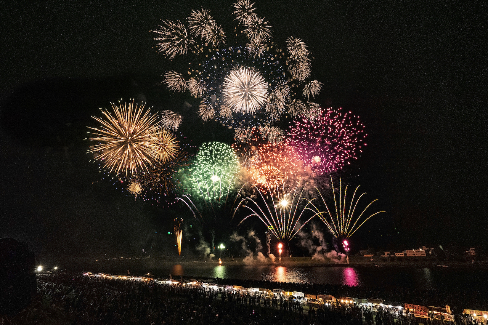
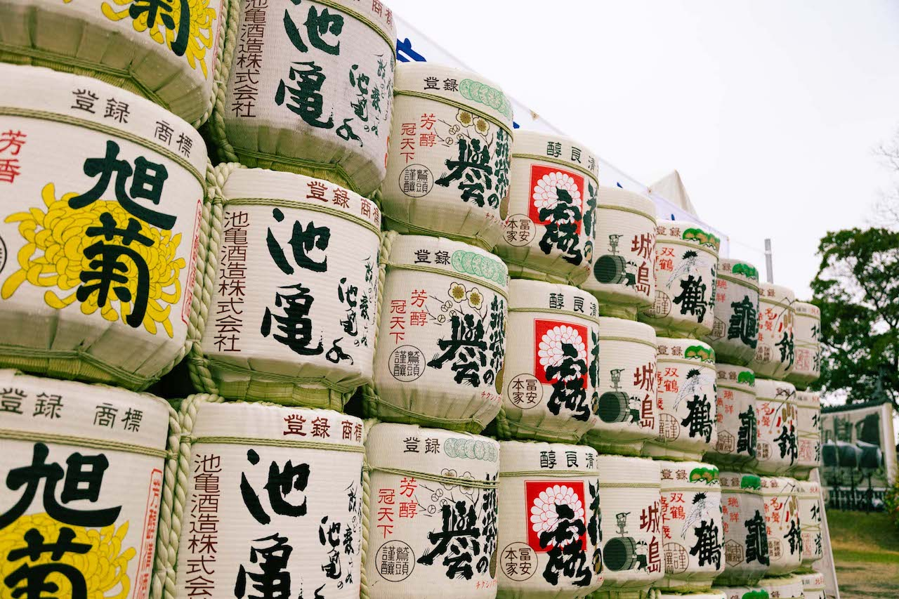

主なイベント

水の祭典久留米まつり
久留米市の夏を代表する大きなお祭りです。 パレードや様々な催しが行われ、 多くの人でにぎわいます。

鬼夜
久留米市大善寺で行われる伝統的な火祭りです。 大きなたいまつを使った迫力のある行事で、 久留米を代表する伝統行事のひとつです。

筑後川花火大会
筑後川の河川敷で行われる夏の花火大会です。 夜空に打ち上げられる花火を楽しむことができ、 夏の久留米を代表するイベントです。

城島酒蔵びらき
久留米市城島町で開催される酒蔵開きのイベントです。 地元の酒蔵が参加し、日本酒や地域の食を 楽しむことができます。